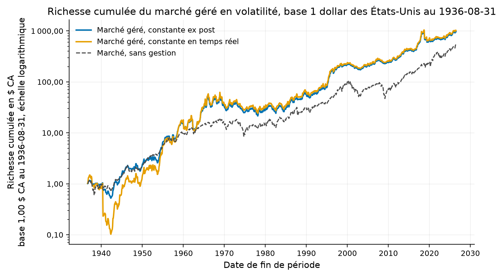
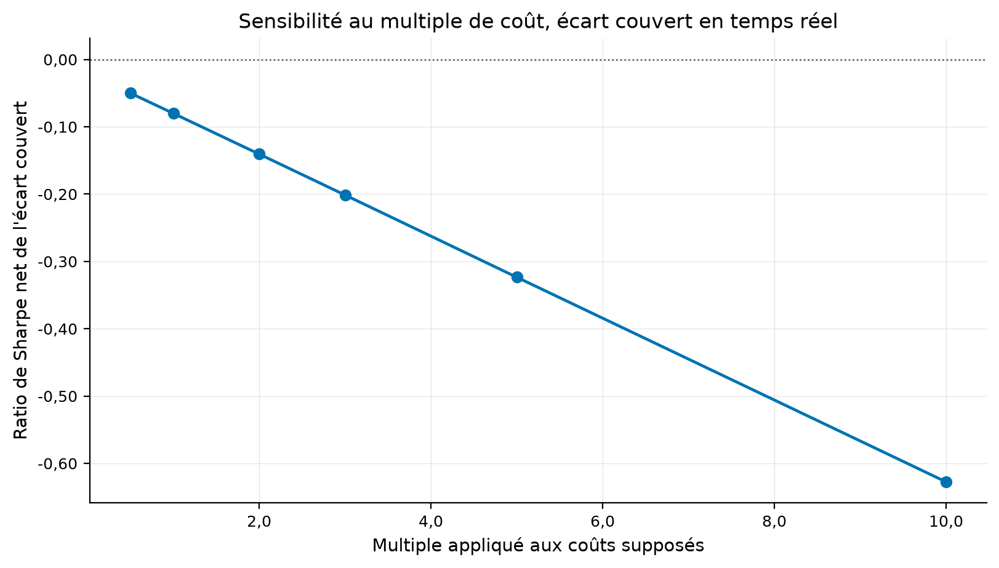
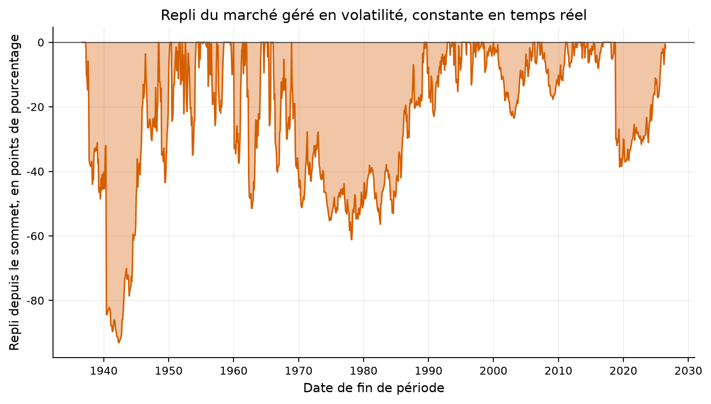
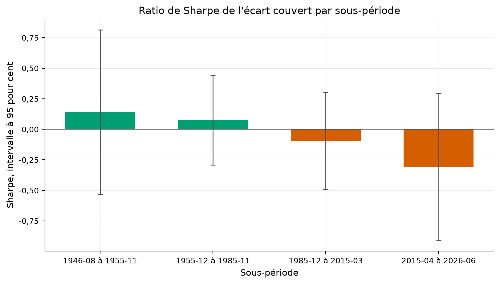
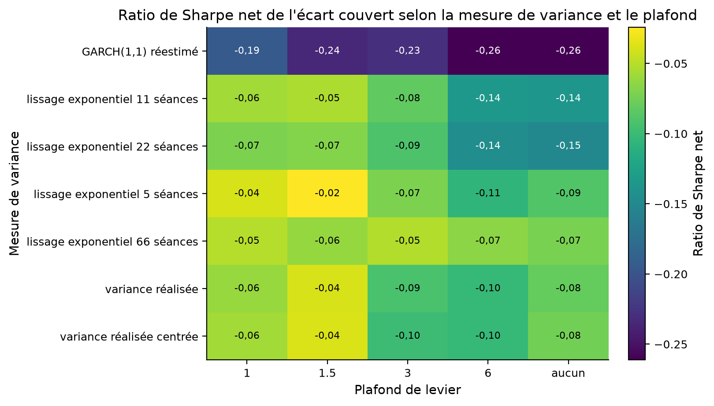
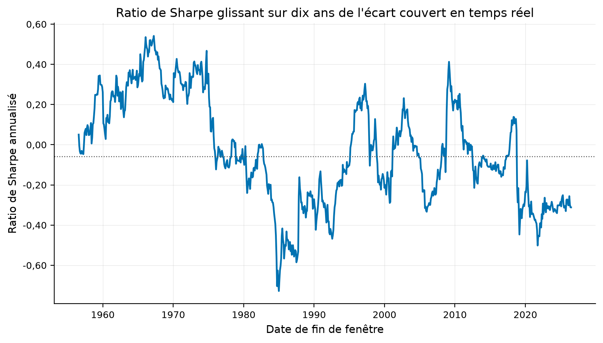
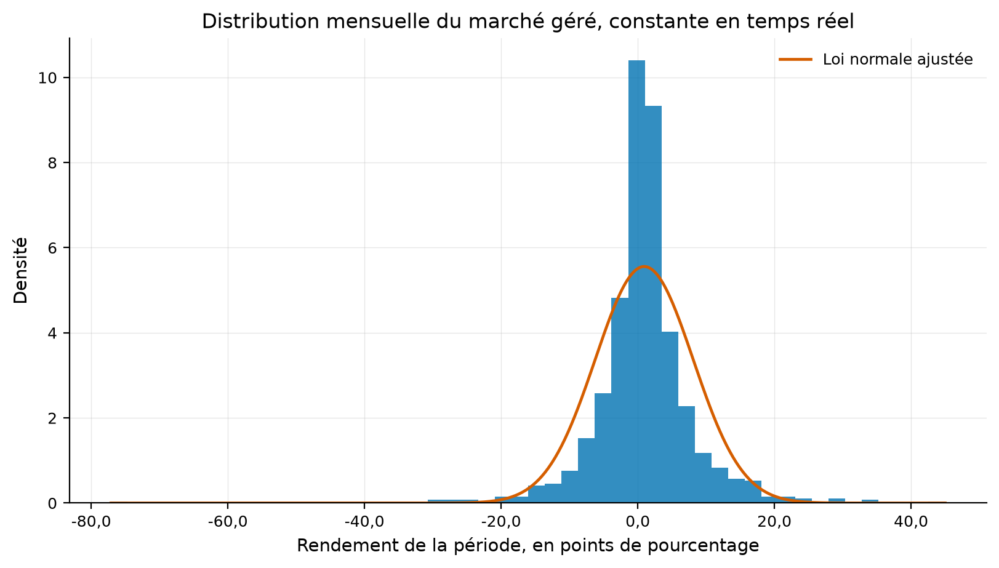
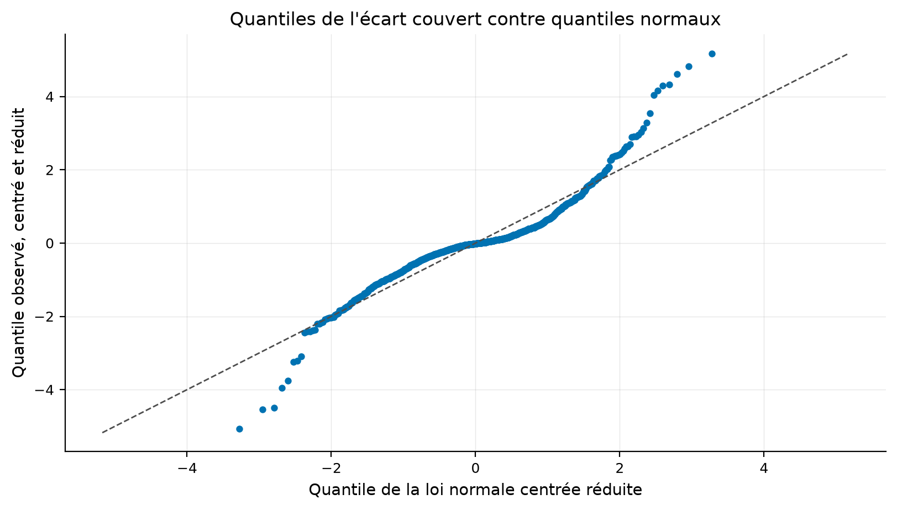
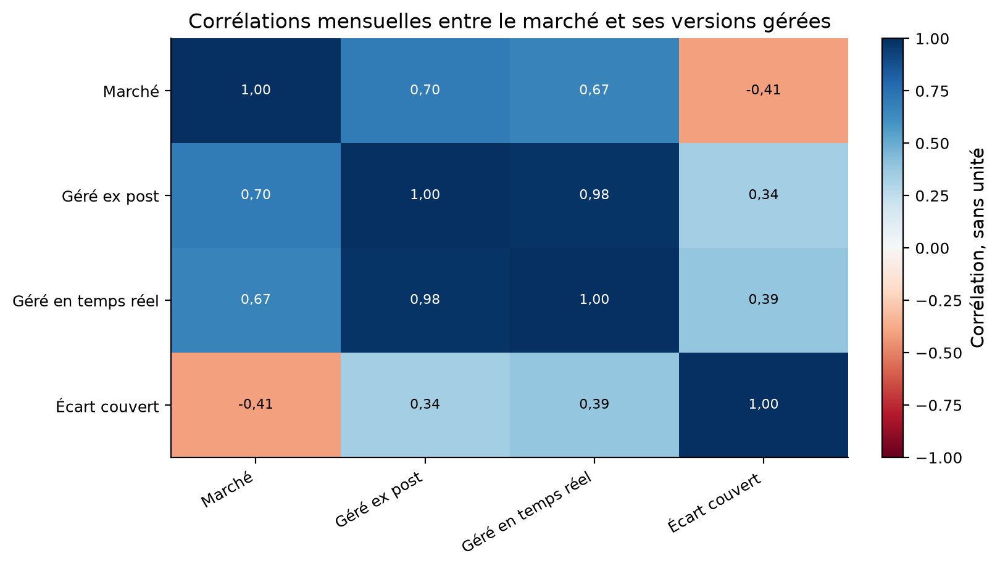

Verdict : REJECTED
Gérer un facteur par sa volatilité passée crée-t-il de l'alpha, ou seulement l'illusion qu'en donne une constante de calibrage choisie après coup ?
Moreira et Muir (2017), Volatility-Managed Portfolios, Journal of Finance 72(4). Les chiffres cibles viennent du document de travail NBER 22208 d'avril 2016.
Le facteur est multiplié par l'inverse de sa variance réalisée du mois précédent, puis mis à l'échelle par une constante. Le test est une régression du facteur géré sur le facteur d'origine, et l'ordonnée à l'origine est lue comme un alpha.
Six facteurs viennent de la bibliothèque de Kenneth French, en quotidien et en mensuel. Deux viennent de global-q.org. Le portage de change n'est pas publié en quotidien, donc il est déclaré non trouvé.
| factor | end | n_months | n_months_with_q_start | paper_n | gap |
|---|---|---|---|---|---|
| Marché | 2015-12 | 1073 | 1073 | 1065 | 8 |
| Marché | 2015-04 | 1065 | 1065 | 1065 | 0 |
| Taille | 2015-12 | 1073 | 1073 | 1065 | 8 |
| Taille | 2015-04 | 1065 | 1065 | 1065 | 0 |
| Valeur | 2015-12 | 1073 | 1073 | 1065 | 8 |
| Valeur | 2015-04 | 1065 | 1065 | 1065 | 0 |
| Momentum | 2015-12 | 1068 | 1068 | 1060 | 8 |
| Momentum | 2015-04 | 1060 | 1060 | 1060 | 0 |
| Rentabilité (RMW) | 2015-12 | 629 | 629 | 621 | 8 |
| Rentabilité (RMW) | 2015-04 | 621 | 621 | 621 | 0 |
| Investissement (CMA) | 2015-12 | 629 | 629 | 621 | 8 |
| Investissement (CMA) | 2015-04 | 621 | 621 | 621 | 0 |
| Rentabilité sur fonds propres (ROE) | 2015-12 | 587 | 583 | 575 | 12 |
| Rentabilité sur fonds propres (ROE) | 2015-04 | 579 | 575 | 575 | 4 |
| Investissement (IA) | 2015-12 | 587 | 583 | 575 | 12 |
| Investissement (IA) | 2015-04 | 579 | 575 | 575 | 4 |
| factor | daily_source | monthly_source | covered |
|---|---|---|---|
| Marché | Kenneth French | Kenneth French | True |
| Taille | Kenneth French | Kenneth French | True |
| Valeur | Kenneth French | Kenneth French | True |
| Momentum | Kenneth French | Kenneth French | True |
| Rentabilité (RMW) | Kenneth French | Kenneth French | True |
| Investissement (CMA) | Kenneth French | Kenneth French | True |
| Rentabilité sur fonds propres (ROE) | global-q.org | global-q.org | True |
| Investissement (IA) | global-q.org | global-q.org | True |
| Portage de change | non trouvé, série quotidienne non publiée | non trouvé, série quotidienne non publiée | False |
La stratégie vit dans quantlab.strategies.volatility_managed. La variance porte la date du mois qui la produit, et le décalage d'un mois se fait en un seul endroit.
Le facteur est autofinancé, donc le levier ne coûte rien de plus que la rotation. Les rendements quotidiens sont supposés non corrélés à l'intérieur du mois.
L'alpha du marché ressort à 4.74 pour cent par an contre 4,86 publié, sur 1065 mois contre 1 065 publiés.
| quantity | published | ours | absolute_error | relative_error | tolerance | tolerance_kind | verdict | source |
|---|---|---|---|---|---|---|---|---|
| alpha annualisé, Marché | 4.86 | 4.743380 | 0.116620 | 0.023996 | 0.25 | relative | répliqué | Moreira et Muir (2016), NBER 22208, tableau 1, panneau A |
| alpha annualisé, Momentum | 12.51 | 12.568805 | 0.058805 | 0.004701 | 0.25 | relative | répliqué | Moreira et Muir (2016), NBER 22208, tableau 1, panneau A |
| alpha annualisé, Rentabilité (RMW) | 2.44 | 2.493952 | 0.053952 | 0.022111 | 0.25 | relative | répliqué | Moreira et Muir (2016), NBER 22208, tableau 1, panneau A |
| alpha annualisé, Rentabilité sur fonds propres (ROE) | 5.48 | 4.975234 | 0.504766 | 0.092111 | 0.25 | relative | répliqué | Moreira et Muir (2016), NBER 22208, tableau 1, panneau A |
| alpha annualisé, Investissement (IA) | 1.55 | 1.654530 | 0.104530 | 0.067439 | 0.25 | relative | répliqué | Moreira et Muir (2016), NBER 22208, tableau 1, panneau A |
| nombre de mois du marché | 1065.00 | 1065.000000 | 0.000000 | 0.000000 | 0.00 | absolute | répliqué | Moreira et Muir (2016), NBER 22208, tableau 1, panneau A |
| bêta du marché géré | 0.61 | 0.622496 | 0.012496 | 0.020485 | 0.25 | relative | répliqué | Moreira et Muir (2016), NBER 22208, tableau 1, panneau A |
| erreur type de l'alpha du marché | 1.56 | 1.565465 | 0.005465 | 0.003503 | 0.25 | relative | répliqué | Moreira et Muir (2016), NBER 22208, tableau 1, panneau A |
| factor | n_months | paper_n | beta | paper_beta | alpha_annual_pct | paper_alpha | alpha_stderr_pct | paper_stderr | alpha_tstat | r_squared | paper_r2 | paper_rmse_ours | paper_rmse | appraisal_ratio | base_sharpe | utility_gain |
|---|---|---|---|---|---|---|---|---|---|---|---|---|---|---|---|---|
| Marché | 1065 | 1065 | 0.622496 | 0.61 | 4.743380 | 4.86 | 1.565465 | 1.56 | 3.030013 | 0.387501 | 0.37 | 50.718489 | 51.39 | 0.323976 | 0.418677 | 0.598779 |
| Taille | 1065 | 1065 | 0.625905 | 0.62 | -0.856740 | -0.58 | 0.918526 | 0.91 | -0.932734 | 0.391757 | 0.38 | 29.911233 | 30.44 | -0.099221 | 0.227068 | 0.190942 |
| Valeur | 1065 | 1065 | 0.542016 | 0.57 | 1.816520 | 1.97 | 1.097716 | 1.02 | 1.654818 | 0.293781 | 0.32 | 35.592322 | 34.92 | 0.176797 | 0.395048 | 0.200285 |
| Momentum | 1060 | 1060 | 0.461579 | 0.47 | 12.568805 | 12.51 | 1.573036 | 1.71 | 7.990157 | 0.213055 | 0.22 | 50.733029 | 50.37 | 0.858210 | 0.478077 | 3.222490 |
| Rentabilité (RMW) | 621 | 621 | 0.585584 | 0.62 | 2.493952 | 2.44 | 0.880130 | 0.83 | 2.833618 | 0.342909 | 0.38 | 21.787056 | 20.16 | 0.396534 | 0.400928 | 0.978201 |
| Investissement (CMA) | 621 | 621 | 0.684413 | 0.68 | 0.253726 | 0.38 | 0.705787 | 0.67 | 0.359493 | 0.468422 | 0.46 | 17.377685 | 17.55 | 0.050578 | 0.540283 | 0.008764 |
| Rentabilité sur fonds propres (ROE) | 575 | 575 | 0.678400 | 0.63 | 4.975234 | 5.48 | 0.956823 | 0.97 | 5.199745 | 0.460227 | 0.40 | 22.445958 | 23.69 | 0.767832 | 0.732993 | 1.097317 |
| Investissement (IA) | 575 | 575 | 0.675203 | 0.68 | 1.654530 | 1.55 | 0.713948 | 0.67 | 2.317438 | 0.455899 | 0.47 | 16.667312 | 16.58 | 0.343874 | 0.812008 | 0.179341 |
Tous les chiffres portent leur échantillon et leur base de coût dans le tableau ci-dessous.
| metric | value | sample | cost_basis |
|---|---|---|---|
| alpha_marche_in_sample_pct | 4.743380e+00 | IS | gross |
| tstat_alpha_marche_in_sample | 3.030013e+00 | IS | gross |
| appraisal_marche_in_sample | 3.239756e-01 | IS | gross |
| alpha_marche_temps_reel_pct | 2.438225e+00 | VALIDATION | gross |
| tstat_alpha_marche_temps_reel | 1.250434e+00 | VALIDATION | gross |
| appraisal_marche_temps_reel | 1.333651e-01 | VALIDATION | gross |
| sharpe_ecart_couvert_oos_net | -3.621102e-01 | OOS | net |
| sharpe_ecart_couvert_complet_net | -8.004983e-02 | VALIDATION | net |
| rotation_annualisee | 9.743740e+00 | VALIDATION | gross |
| cout_de_rentabilite_bps | -3.708256e+00 | VALIDATION | gross |
| probabilite_de_surapprentissage | 7.000000e-01 | VALIDATION | net |
| sharpe_degonfle | 6.991736e-37 | OOS | net |
| t_apres_correction | -1.179134e+00 | OOS | net |
| part_de_sous_periodes_positives | 5.000000e-01 | VALIDATION | net |
| correlation_avec_le_marche | -4.067239e-01 | VALIDATION | gross |
| cpcv_sharpe_moyen | -1.187553e-01 | OOS | net |
| cpcv_part_de_chemins_negatifs | 1.000000e+00 | OOS | net |

La rotation annualisée vaut 9.74 et le coût qui annule le rendement brut vaut -4 points de base.
| version | cost_bps | n_months | start | end | gross_mean_annual_pct | net_mean_annual_pct | net_sharpe | net_tstat | annual_turnover | breakeven_cost_bps |
|---|---|---|---|---|---|---|---|---|---|---|
| écart couvert, constante et bêta ex post | 0.0 | 1199 | 1926-08-31 | 2026-06-30 | 4.346868 | 4.346868 | 0.301505 | 2.750837 | 8.043511 | 53.641236 |
| écart couvert, constante et bêta ex post | 1.0 | 1199 | 1926-08-31 | 2026-06-30 | 4.346868 | 4.266500 | 0.296027 | 2.701879 | 8.043511 | 53.641236 |
| écart couvert, constante et bêta ex post | 10.0 | 1199 | 1926-08-31 | 2026-06-30 | 4.346868 | 3.543188 | 0.246518 | 2.257782 | 8.043511 | 53.641236 |
| écart couvert, constante et bêta ex post | 14.0 | 1199 | 1926-08-31 | 2026-06-30 | 4.346868 | 3.221716 | 0.224402 | 2.058428 | 8.043511 | 53.641236 |
| écart couvert, constante et bêta en temps réel | 0.0 | 959 | 1946-08-31 | 2026-06-30 | -0.324372 | -0.324372 | -0.019934 | -0.166934 | 9.743740 | -3.708256 |
| écart couvert, constante et bêta en temps réel | 1.0 | 959 | 1946-08-31 | 2026-06-30 | -0.324372 | -0.421708 | -0.025926 | -0.217065 | 9.743740 | -3.708256 |
| écart couvert, constante et bêta en temps réel | 10.0 | 959 | 1946-08-31 | 2026-06-30 | -0.324372 | -1.297730 | -0.080050 | -0.668653 | 9.743740 | -3.708256 |
| écart couvert, constante et bêta en temps réel | 14.0 | 959 | 1946-08-31 | 2026-06-30 | -0.324372 | -1.687073 | -0.104208 | -0.869348 | 9.743740 | -3.708256 |
| hedge_beta | beta_median | n_months | gross_sharpe_full | gross_sharpe_oos | correlation_with_base |
|---|---|---|---|---|---|
| bêta en expansion, tenable | 1.440641 | 959 | -0.019934 | -0.308162 | -0.406724 |
| bêta de plein échantillon, non tenable | 1.069530 | 959 | 0.130431 | -0.286342 | -0.101464 |

La mesure de variance, le plafond de levier, la fenêtre de la constante et le délai d'exécution sont balayés, et chaque cellule compte comme un essai.
| estimator | leverage_cap | n_months | net_sharpe | net_alpha_annual_pct | net_tstat |
|---|---|---|---|---|---|
| variance réalisée | 0.0 | 959 | -0.079935 | -1.295871 | -0.667703 |
| variance réalisée | 1.0 | 959 | -0.061073 | -0.322519 | -0.540690 |
| variance réalisée | 1.5 | 959 | -0.038997 | -0.300106 | -0.334922 |
| variance réalisée | 3.0 | 959 | -0.092558 | -1.180651 | -0.773308 |
| variance réalisée | 6.0 | 959 | -0.102771 | -1.605549 | -0.864614 |
| variance réalisée centrée | 0.0 | 959 | -0.075119 | -1.248332 | -0.635508 |
| variance réalisée centrée | 1.0 | 959 | -0.057448 | -0.304487 | -0.508968 |
| variance réalisée centrée | 1.5 | 959 | -0.037434 | -0.288486 | -0.320396 |
| variance réalisée centrée | 3.0 | 959 | -0.098397 | -1.252100 | -0.820725 |
| variance réalisée centrée | 6.0 | 959 | -0.102759 | -1.613930 | -0.874868 |
| lissage exponentiel 5 séances | 0.0 | 959 | -0.088862 | -1.402641 | -0.761799 |
| lissage exponentiel 5 séances | 1.0 | 959 | -0.038951 | -0.209068 | -0.356668 |
| lissage exponentiel 5 séances | 1.5 | 959 | -0.024292 | -0.189832 | -0.213809 |
| lissage exponentiel 5 séances | 3.0 | 959 | -0.070888 | -0.901189 | -0.600922 |
| lissage exponentiel 5 séances | 6.0 | 959 | -0.106218 | -1.631769 | -0.909385 |
| lissage exponentiel 11 séances | 0.0 | 959 | -0.136746 | -2.044101 | -1.143729 |
| lissage exponentiel 11 séances | 1.0 | 959 | -0.057445 | -0.300293 | -0.500643 |
| lissage exponentiel 11 séances | 1.5 | 959 | -0.053733 | -0.415281 | -0.459329 |
| lissage exponentiel 11 séances | 3.0 | 959 | -0.082333 | -1.025321 | -0.674057 |
| lissage exponentiel 11 séances | 6.0 | 959 | -0.135066 | -1.998955 | -1.125526 |
| lissage exponentiel 22 séances | 0.0 | 959 | -0.150215 | -2.140941 | -1.213050 |
| lissage exponentiel 22 séances | 1.0 | 959 | -0.070679 | -0.361280 | -0.572950 |
| lissage exponentiel 22 séances | 1.5 | 959 | -0.067966 | -0.515375 | -0.550523 |
| lissage exponentiel 22 séances | 3.0 | 959 | -0.090024 | -1.092531 | -0.711716 |
| lissage exponentiel 22 séances | 6.0 | 959 | -0.144760 | -2.050935 | -1.165145 |
| lissage exponentiel 66 séances | 0.0 | 959 | -0.071951 | -0.974126 | -0.545640 |
| lissage exponentiel 66 séances | 1.0 | 959 | -0.050500 | -0.243217 | -0.376449 |
| lissage exponentiel 66 séances | 1.5 | 959 | -0.062069 | -0.454630 | -0.471124 |
| lissage exponentiel 66 séances | 3.0 | 959 | -0.051523 | -0.602598 | -0.383614 |
| lissage exponentiel 66 séances | 6.0 | 959 | -0.065755 | -0.881310 | -0.495455 |
| GARCH(1,1) réestimé | 0.0 | 908 | -0.261215 | -3.728550 | -2.064207 |
| GARCH(1,1) réestimé | 1.0 | 908 | -0.194384 | -0.985348 | -1.540666 |
| GARCH(1,1) réestimé | 1.5 | 908 | -0.235085 | -1.880139 | -1.859633 |
| GARCH(1,1) réestimé | 3.0 | 908 | -0.227917 | -2.965866 | -1.808123 |
| GARCH(1,1) réestimé | 6.0 | 908 | -0.261215 | -3.728550 | -2.064207 |
| label | start | end | n_observations | total_return | cagr | volatility | sharpe | sharpe_se_iid | sharpe_se_lo | t_stat | max_drawdown | hit_rate |
|---|---|---|---|---|---|---|---|---|---|---|---|---|
| 1946-08 à 1955-11 | 1946-08-31 | 1955-11-30 | 112 | 0.094574 | 0.009729 | 0.183832 | 0.142050 | 0.327464 | 0.343305 | 0.413772 | -0.526572 | 0.473214 |
| 1955-12 à 1985-11 | 1955-12-31 | 1985-11-30 | 360 | -0.068673 | -0.002369 | 0.179409 | 0.076308 | 0.182596 | 0.187363 | 0.407274 | -0.692001 | 0.486111 |
| 1985-12 à 2015-03 | 1985-12-31 | 2015-03-31 | 352 | -0.495516 | -0.023056 | 0.141687 | -0.095364 | 0.184672 | 0.202943 | -0.469908 | -0.574170 | 0.446023 |
| 2015-04 à 2026-06 | 2015-04-30 | 2026-06-30 | 135 | -0.476232 | -0.055864 | 0.148954 | -0.308709 | 0.298734 | 0.307615 | -1.003559 | -0.652738 | 0.474074 |



Avec une constante estimée sur le seul passé, l'alpha du marché passe de 4.74 à 2.44 pour cent par an. Le Sharpe hors échantillon de l'écart couvert net vaut -0.36.
| factor | n_months | alpha_ex_post_pct | alpha_real_time_pct | alpha_gap_pct | tstat_ex_post | tstat_real_time | appraisal_ex_post | appraisal_real_time | appraisal_ratio_of_ratios | vol_ratio_ex_post | vol_ratio_real_time |
|---|---|---|---|---|---|---|---|---|---|---|---|
| Marché | 1079 | 2.595859 | 2.438225 | -0.157633 | 1.785959 | 1.250434 | 0.190482 | 0.133365 | 0.700147 | 1.199891 | 1.576894 |
| Taille | 1079 | -0.837264 | -0.247370 | 0.589895 | -0.955793 | -0.217921 | -0.100932 | -0.023013 | 0.228000 | 1.135283 | 1.407405 |
| Valeur | 1079 | 1.164696 | 1.809112 | 0.644416 | 1.117619 | 1.183122 | 0.118654 | 0.125608 | 1.058609 | 1.263185 | 1.871762 |
| Momentum | 1074 | 11.263013 | 11.072331 | -0.190683 | 7.312111 | 4.824189 | 0.781602 | 0.515664 | 0.659753 | 1.213015 | 1.759082 |
| Rentabilité (RMW) | 635 | 2.721897 | 1.502764 | -1.219133 | 3.251737 | 3.046809 | 0.449577 | 0.421244 | 0.936979 | 0.883459 | 0.542788 |
| Investissement (CMA) | 635 | 0.638958 | 0.434048 | -0.204910 | 0.904253 | 0.748055 | 0.125431 | 0.103764 | 0.827263 | 0.957238 | 0.794760 |
| Rentabilité sur fonds propres (ROE) | 583 | 6.150788 | 4.652984 | -1.497804 | 6.005520 | 5.852001 | 0.879791 | 0.857301 | 0.974437 | 0.967792 | 0.758605 |
| Investissement (IA) | 583 | 1.901136 | 1.314497 | -0.586639 | 2.281828 | 1.916609 | 0.329976 | 0.277162 | 0.839945 | 1.009895 | 0.827407 |
| risk_aversion | constant_window_months | n_months | sharpe_combination | sharpe_base_only | ce_combination | ce_base_only | median_weight_base | median_weight_managed | p99_weight_managed | combination_wins |
|---|---|---|---|---|---|---|---|---|---|---|
| 1.0 | 60 | 1019 | 0.550243 | 0.527225 | 0.133715 | 0.118681 | 1.289052 | 1.038317 | 1.265978 | True |
| 1.0 | 120 | 959 | 0.519345 | 0.508666 | 0.130697 | 0.128685 | 2.193172 | 0.587063 | 0.966633 | True |
| 1.0 | 240 | 839 | 0.381408 | 0.411665 | 0.050811 | 0.058937 | 2.133520 | 0.979090 | 1.530177 | False |
| 1.0 | 360 | 719 | 0.404652 | 0.394647 | 0.081117 | 0.077672 | 1.084801 | 1.359975 | 1.874516 | True |
| 3.0 | 60 | 1019 | 0.550243 | 0.527225 | 0.044572 | 0.039560 | 0.429684 | 0.346106 | 0.421993 | True |
| 3.0 | 120 | 959 | 0.519345 | 0.508666 | 0.043566 | 0.042895 | 0.731057 | 0.195688 | 0.322211 | True |
| 3.0 | 240 | 839 | 0.381408 | 0.411665 | 0.016937 | 0.019646 | 0.711173 | 0.326363 | 0.510059 | False |
| 3.0 | 360 | 719 | 0.404652 | 0.394647 | 0.027039 | 0.025891 | 0.361600 | 0.453325 | 0.624839 | True |
| 5.0 | 60 | 1019 | 0.550243 | 0.527225 | 0.026743 | 0.023736 | 0.257810 | 0.207663 | 0.253196 | True |
| 5.0 | 120 | 959 | 0.519345 | 0.508666 | 0.026139 | 0.025737 | 0.438634 | 0.117413 | 0.193327 | True |
| 5.0 | 240 | 839 | 0.381408 | 0.411665 | 0.010162 | 0.011787 | 0.426704 | 0.195818 | 0.306035 | False |
| 5.0 | 360 | 719 | 0.404652 | 0.394647 | 0.016223 | 0.015534 | 0.216960 | 0.271995 | 0.374903 | True |
| 10.0 | 60 | 1019 | 0.550243 | 0.527225 | 0.013372 | 0.011868 | 0.128905 | 0.103832 | 0.126598 | True |
| 10.0 | 120 | 959 | 0.519345 | 0.508666 | 0.013070 | 0.012868 | 0.219317 | 0.058706 | 0.096663 | True |
| 10.0 | 240 | 839 | 0.381408 | 0.411665 | 0.005081 | 0.005894 | 0.213352 | 0.097909 | 0.153018 | False |
| 10.0 | 360 | 719 | 0.404652 | 0.394647 | 0.008112 | 0.007767 | 0.108480 | 0.135997 | 0.187452 | True |
| statistic | value |
|---|---|
| count | 7.000000 |
| mean | -0.118755 |
| median | -0.125758 |
| std | 0.023951 |
| min | -0.145183 |
| max | -0.075310 |
| quantile_low | -0.143866 |
| quantile_high | -0.083839 |
| quantile_low_level | 0.050000 |
| quantile_high_level | 0.950000 |
| negative_share | 1.000000 |

Le ratio de Sharpe dégonflé, la probabilité de surapprentissage et la correction de Holm sur les huit facteurs sont rapportés dans les tableaux joints.
| factor | tstat_real_time | pvalue | adjusted_pvalue | rejected |
|---|---|---|---|---|
| Marché | 1.250434 | 2.111410e-01 | 8.445640e-01 | False |
| Taille | -0.217921 | 8.274910e-01 | 9.088538e-01 | False |
| Valeur | 1.183122 | 2.367609e-01 | 8.445640e-01 | False |
| Momentum | 4.824189 | 1.405742e-06 | 9.840194e-06 | True |
| Rentabilité (RMW) | 3.046809 | 2.312847e-03 | 1.387708e-02 | True |
| Investissement (CMA) | 0.748055 | 4.544269e-01 | 9.088538e-01 | False |
| Rentabilité sur fonds propres (ROE) | 5.852001 | 4.856944e-09 | 3.885555e-08 | True |
| Investissement (IA) | 1.916609 | 5.528767e-02 | 2.764383e-01 | False |
| family | n_trials |
|---|---|
| in_sample | 8 |
| real_time | 8 |
| combination | 16 |
| costs_ex_post | 4 |
| costs | 4 |
| cost_multiple | 6 |
| hedge | 1 |
| delay | 3 |
| sweep | 35 |
| window | 4 |
| TOTAL | 89 |


La corrélation de l'écart couvert avec le marché est celle d'une série construite pour être orthogonale au passé, et elle est publiée dans les métriques.

Le portage de change manque. Les facteurs q sont d'un millésime plus récent que celui de l'article. Aucun coût de financement du levier n'est retranché.
Le verdict est déduit des seuils écrits dans config.yaml, sans arbitrage.
REJECTED